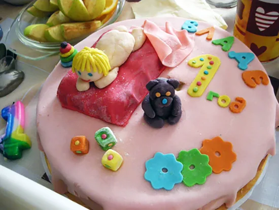
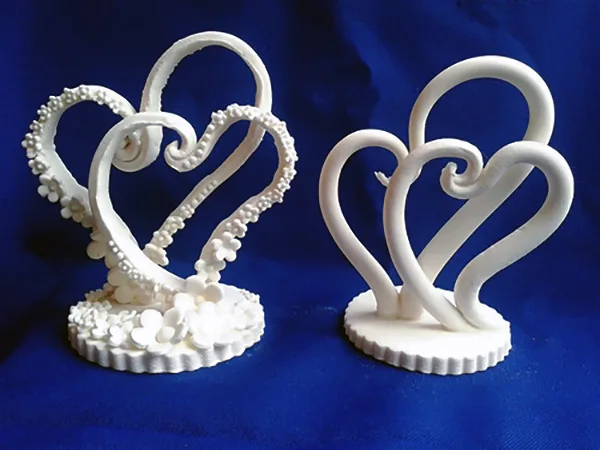
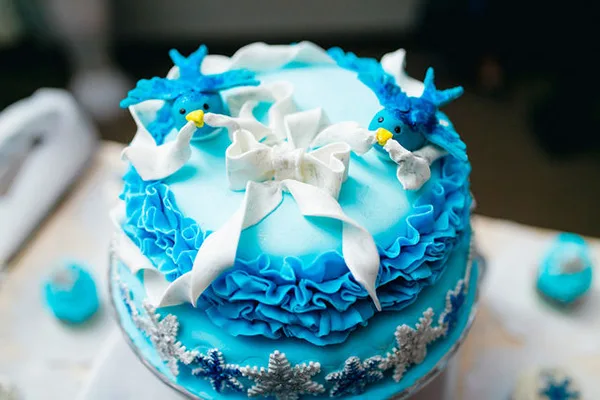

Сучасним господаркам відомо безліч способів і технік дизайну тортиків, найефектнішим і красивим з яких вважається оформлення виробів мастикою. Ця стаття допоможе розібратися, яка мастика краще підходить для обтягування торта, і дізнатися переваги і недоліки кожного виду, виготовлення якого можливо в домашніх умовах.
Молочна мастика
Мастика зі згущеного молока – один з найпростіших варіантів. Для приготування необхідні доступні інгредієнти: згущене молоко, цукор і сухе молоко або суміш для дитячого харчування.
Отримана маса має ніжний вершковий смак, який припаде до душі дорослим і дітям. Також до її переваг можна віднести те, що вона відмінно підходить для створення фігурок і дрібних елементів.
Зверніть увагу!
Готова молочна маса виходить жовтуватого відтінку. Щоб вона стала білою, доведеться скористатися барвником.
Недоліки мастики, приготовленої за цим рецептом:
- нею неможливо обтягнути торт тонким шаром – краще розкачати пласт товщиною 2-3 мм, щоб уникнути розривів і просвітів;
- великі елементи висихають повільно, тому готувати їх потрібно заздалегідь;
- шар крему на торті перед обтягуванням повинен бути ідеально рівним.
З маршмеллоу

Найбільш еластичний і практичний вид покриття для торта. Готується з маршмеллоу, цукру (пудри) і невеликої кількості вершкового масла.
Важливо!
Цукрову пудру потрібно брати найменшого помелу – це допоможе уникнути розривів мастики при роботі з нею.
За смаком нагадує суфле або зефір, але більш тягучий і ніжний. Маса підійде і для обтягування тортів, і для створення фігурок або квітів.
Мастику з маршмеллоу вибирають для обтягування тому, що:
- з нею приємно працювати – вона не липне до рук і добре розкочується в тонкий пласт;
- вона рівномірно фарбується барвниками;
- прекрасно тримає форму, підійде для фігурного ліплення;
- «склеїти» мастичні деталі належним чином можна, промазав місця з’єднання водою за допомогою пензлика.
Головним недоліком такої мастики вважається неможливість її нанесення на основу з просочених коржів або в комбінації з рідкими кремами (вершковим або сметанним) ‒ в такому випадку маршмеллоу швидко розчиняється на поверхні тортів.
Тому під цукрову пасту цього виду рекомендується використовувати масляний крем. Під ним коржі можуть бути цілком просоченими і промазаними будь-яким кремом.
Желатинова

Ще один хороший і доступний вид мастики готується з желатину. Порошок послужить в’язким елементом. Крім нього, в приготуванні використовують цукрову пудру і воду. Це найкращий різновид для створення елементів білого кольору – маса виходить білосніжною, так що фарбування не потрібно.
Важливо!
Використовувати желатинову мастику для покриття торта дуже складно – вона сохне, можна сказати, моментально. Однак для створення прикрас і стійких деталей (наприклад, ручки кошика) така мастика підійде найкращим чином.
Відмітна риса і плюс цього матеріалу – це його твердість після застигання. Завдяки цьому, з нього можна виготовляти такі елементи, як дерева, квіти, містки. У той же час ці переваги перевішуються мінусами:
- мастика сохне дуже швидко, тому вирівняти середній або великий торт практично неможливо;
- при роботі може сильно липнути до рук;
- іноді тріскається.
Чим же обтягнути торт

Все-таки якась мастика краще підходить для покриття торта? Розглянувши всі вищенаведені типи мастик і врахувавши їх недоліки та переваги, можна зробити висновок.
Якщо ви плануєте вирівнювати торт, наприклад, на йогуртовому кремі або з просоченими сиропом коржами, краще скористатися молочною мастикою. Такий кондитерський виріб, завдяки ніжному смаку самої мастики, сподобається хлопчикам і дівчаткам, дорослим і дітям.
Якщо ж ви прикрашаєте великий торт з масляним кремом, можна сміливо брати мастику з маршмеллоу – вона найбільш еластична, і покривати нею торт досить легко.
Мастику з желатину в якості покриття торта краще зовсім не розглядати, зате для різних твердих фігурок вона залишається незамінною.
Рекомендуємо подивитися відео про те, як відбувається обтягування торта. Автор підказує багато рішень і дає корисні поради.